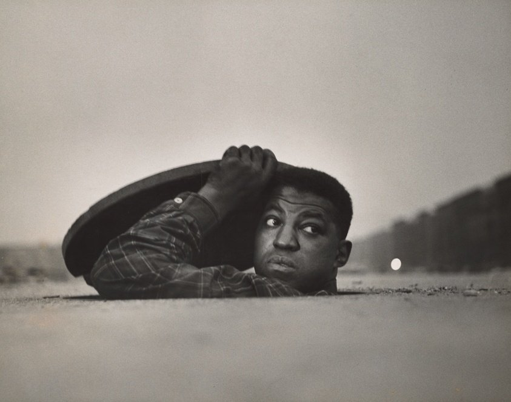

The Invisible Man (Harlem, New York), from A Man Becomes Invisible
Gordon Parks · 1952 · Gelatin silver print · 33.1 × 42 cm · Art Institute of Chicago
In copyright. Look and learn: shown for study, not for download.
Gordon Parks made this for a Life photo-essay with his friend Ralph Ellison, published on 25 August 1952 to introduce Ellison's new novel, Invisible Man. It stages the book's ending, the narrator coming up out of his underground hiding place into Harlem. Parks used street photography, built sets and photomontage for the series, and Life printed only four of the pictures. He had joined the magazine's staff after a 1948 essay on a Harlem gang leader, its first African American staff photographer.